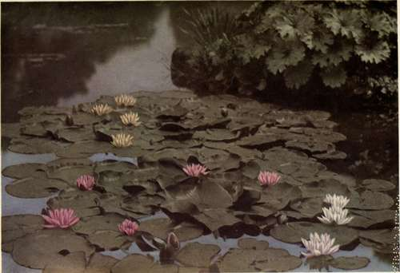

Chapter V. Water Gardens
Description
This section is from the book "What England Can Teach Us About Gardening", by Wilhelm Miller. Also available from Amazon: What England Can Teach Us About Gardening.
Chapter V. Water Gardens
We can excel England on water-lilies, but have much to learn from her about design, arrangement, taste.
WHAT we Americans strive hardest for in gardening, and oftenest miss, is what J. M. Barrie in one of his plays calls "that damned charm"; yet the surest, and sometimes the least expensive, way of winning this supreme prize is to have a water garden. There are two reasons for this: First, vegetation cannot help attaining luxuriance by the water side, and without luxuriance there can be no charm. So, even if a person makes every possible mistake in selecting, arranging, and cultivating water plants, he cannot help getting some luxuriance, at least in spots.
In the second place, water possesses an inherent charm which cannot be wholly destroyed even by making a stream muddy or lining it with dump heaps. So, even if we fret the water with visions of bad or inappropriate architecture (as Japanese tea houses, Dutch windmills, and highly coloured boat houses usually are), our friends may still refrain from handing our names to the "Society for the Suppression of Bad Taste." You cannot say this of ordinary, or land, gardening.
Let us try, then, to explain this charm of water, for if we cannot analyze it, how can we hope to reproduce it? What, for instance, is there about the water in these pictures that pleases you? "The shadows," some will answer, who look at the poplars on plate 19. "The perfect reflections we see in still water," others will reply. "The play of wind upon the surface," say others. "The sound of running water," others may exclaim, thinking of the water-falls they know best.
All these answers are correct so far as they go, but I believe that only cultured people can delight in such things to the utmost. The fascination that water has for the uneducated can be explained, I fancy, only by going back to old root-ideas that humanity had before the first language was evolved. Thirst is one, and the pleasure of swimming is another. Of course, these ideas must not emerge into consciousness, or the spell is broken. . But I am confident that the secret charm of water is that it stirs in our subconsciousness these age-old impulses and race feelings. How else can you explain the strong emotions we feel when we see pictures of water in any hot or arid region? How else can you explain why the gardens of ancient Persia appeal so powerfully to the imagination? Yet in those gardens, and in many Italian gardens, the water may be a mere well, an irrigating ditch, a plain drinking place, or a simple jet of water coming out of a crude pipe without the slighest pretense of beautiful architecture or environment. All the pleasant thoughts suggested by water go back to human comfort and refreshment.
But there is a certain mystical charm about water which, I think, cannot be explained on a physical basis. Water is the perfect mirror. Every mother watches for the dramatic moment when her child first sees its reflection in the looking-glass. In the water Narcissus met an unexpected vision. The mirror, somehow, makes things better than they are. It was said of Hawthorne that he tried to see life, not as it was, but as it would appear in a mirror. In the water we suddenly see ourselves as others see us; we wonder who we are; and thoughts spring up about the mystery of life. Now, mere land rarely stirs such emotions. Architecture may only oppress the spirit. Colour in a garden may suggest only cost. So, I say, if you would have charm in a garden, have water, for then you cannot possibly miss it altogether.
21. HARDY WATER LILIES. SAXIFRAGA PELTATA (ON THE BANK), HAS LEAVES A FOOT ACROSS AND MANY PINKISH OR WHITE FLOWERS HALF AN INCH ACROSS IN EARLY SPRING BEFORE THE LEAVES. IT IS A CALIFORNIA PLANT. BUT HARDY IN MASSACHUSETTS. WITH SLIGHT PROTECTION.
I saw many charming water gardens in England last summer. Perhaps the most beautiful was that of Mr. William Robinson, who is said to have the largest collection of hardy water-lilies in Europe. He has three noble lakes on which to sail his lilies. I could not go there when the water-lilies were at their best, and the plates numbered 20, 23, and 25 give only a hint of the beauties there. But surely the noblest idea in water gardening is the naturalizing of water-lilies, the most gorgeous of all aquatic plants. It would pay any American who owns ten or more acres of water surface suitable for lily culture to go to England in July just to see this garden; but, of course, he ought first to arrange for permission to see it.
Another famous water garden is the lake at Kew, which is a favourite theme for painters. But here the effect is not at all dependent upon water-lilies or any other gorgeous flowers. The chief material is trees. The picture on plate 19 shows the right way of using the Lombardy poplar, the most abused tree in America. These few poplars are enough for a lake of three or five acres. It would ruin everything to repeat them at intervals. It is a good rule that two plants may make a pair, but three are the fewest that can make a group. The two poplars at the left may seem to group well, but that is because one is smaller than the other and because they blend into their background. Make them equal and alone, and they would spoil the picture. The great lesson we should learn from this is to use spectacular material with the utmost restraint.
But before we go into questions of design I want to say that we have a great climatic advantage over England in materials for water gardening. There are no flowers in the world that combine purity and brilliancy of colour like water-lilies, and it is a perpetual marvel how these colours can be so vivid and yet so soft. It is true that the great improvements in water-lilies have been made in Europe, but it is only in hot sunlight, like ours, that water-lilies attain their most superb colour. Also we have a greater variety of plants suitable for banks and margins. But what we need to learn from England is to love our own material. The English people love American plants more than we do. For instance, consider the lake at Kew, as shown on plate 18. Every one of these plants is American, or else we have an equivalent of it, and the whole scene might be American. American plants are the conspicuous features in three other pictures (those showing marsh marigold, wild rice, and purple loosestrife).
Continue to:
Tags
garden, flowers, plants, England, effects, foliage, gardening